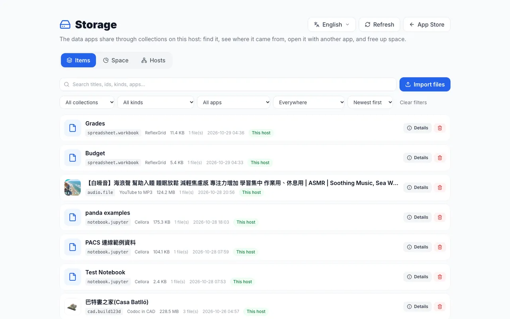
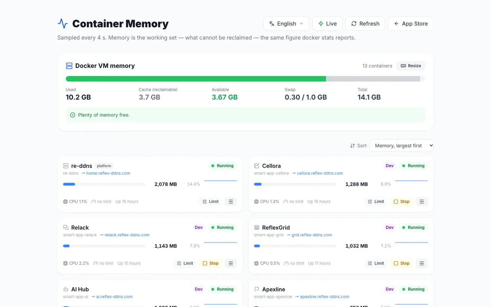
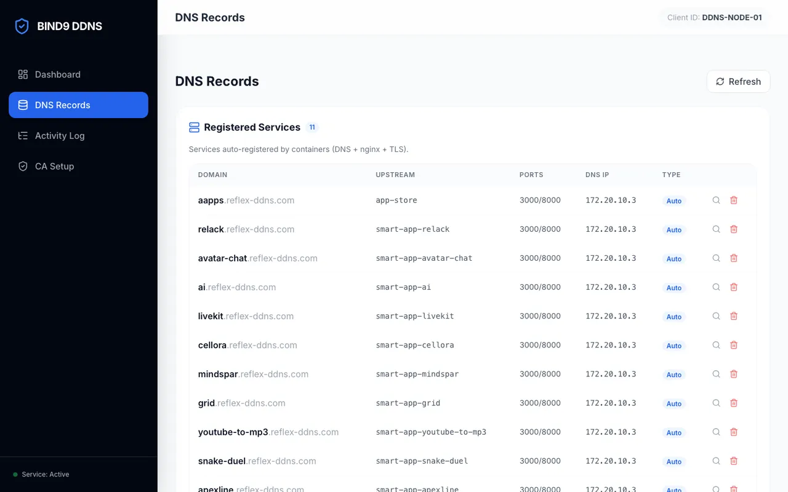

Open source · Self-hosted · Built with Python Reflex開源 · 自架 · 用 Python Reflex 打造
Your own app store, where apps and AI work together你自己的 App Store， 讓 App 和 AI 一起工作
Install open-source Python Reflex apps from GitHub on your own computer or server in one click. Every app gets its own HTTPS address. Apps open each other and share files, and AI agents use their tools through one door.
Everything runs on your own machine, in Docker, and apps keep their data there. For AI, choose Claude or a model that runs on your own computer through Ollama.
Pick an app and press Install. The store downloads it from GitHub, installs what it needs and starts it in its own container, with a live progress bar. No terminal needed.
Built-in DNS, a local certificate authority and a proxy give each app an address like grid.reflex-ddns.com with a green padlock. Other computers on your network join with one script.
The AI Hub app connects AI to the apps. Agents such as Claude Code use the tools apps offer through one MCP address, and an assistant can do tasks inside the apps.
AI Hub 負責把 AI 接到各個 App：Claude Code 之類的 agent 透過一個 MCP 網址使用 App 提供的工具，助理也能直接在 App 裡幫你做事。
Apps that work togetherApp 之間會合作
Apps open each other's pages as dialogs, which is how a notebook, a spreadsheet or an image viewer can start a call. They share files through collections: one app downloads DICOM images, another shows them.
From a GitHub repo to a running app從 GitHub 專案到正在執行的 App
The App Store asks re-ddns, the core container, to start a Smart Launcher container for the app. re-ddns gives the app its name in DNS, signs a certificate for it and adds it to the proxy.
App Store 請核心容器 re-ddns 替 App 開一個 Smart Launcher 容器；re-ddns 再替它登記 DNS 名稱、簽發憑證，並把它加進反向代理。
GitHubAny Reflex app任何 Reflex App
install安裝
App StoreOne click, live progress一鍵安裝，進度即時顯示
starts啟動
Smart LauncherClone, install and run, in its own container下載、安裝、執行，各自一個容器
registers註冊
Its own address專屬網址https://name.reflex-ddns.comDNS, certificate and proxy, done for youDNS、憑證、反向代理自動完成
Apps that offer tools are found by the AI Hub, which hands them to AI agents through one MCP address.有提供工具的 App 會被 AI Hub 找到，再透過一個 MCP 網址交給 AI agent 使用。

Storage: the files apps share, with search, Open with another app and quotas.Storage：App 共用的檔案，可以搜尋、用別的 App 開啟、設定配額。

Memory: how much memory each app's container uses, with limits and restarts.Memory：每個 App 的容器用了多少記憶體，可以設上限、重新啟動。

Re-DDNS control panel: the DNS records of every app that registered.Re-DDNS 控制台：每個已註冊 App 的 DNS 紀錄。
Architecture: the people who use the store, the developers who publish apps, and the AI agents that connect to it. Parts marked Future, such as conversational search, are plans.架構圖：使用商店的人、上架 App 的開發者，以及接進來的 AI agent。標示 Future 的部分（例如對話式搜尋）還在規劃中。
See it in action實際操作
One minute, from the store to a running app一分鐘：從商店到 App 跑起來
In this recording the store installs Video Segment Splitter while a progress bar shows each step. The app then opens at its own HTTPS address and splits a video.
這段錄影裡，商店安裝 Video Segment Splitter，進度條顯示每一步；裝好後，App 在它自己的 HTTPS 網址打開，接著切割一段影片。
PACS Lab starts a practice PACS, the kind of image archive a hospital uses. DICOM Data Explorer finds public research images and downloads them into the shared dicom collection. DICOM Viewer shows them in one or three views with annotations, and one link brings everyone to the same view, with a call.
PACS Lab 開一台練習用的 PACS，也就是醫院存放影像的那種系統；DICOM Data Explorer 搜尋公開的研究影像，下載到共用的 dicom collection；DICOM Viewer 用單一或三個視角顯示影像和標註，分享一個連結，大家就看同一個畫面，還能通話。
For research, teaching and discussion; not for diagnosis.
Through the AI Hub, Claude Code writes build123d code in Codoc in CAD, then looks at the result in CAD Roam and improves it, round after round. When it is done, people walk into the building together, at its real size.
透過 AI Hub，Claude Code 在 Codoc in CAD 裡寫 build123d 程式，再到 CAD Roam 看看成果、繼續修改，一輪接一輪。完成後，大家一起照真實大小走進建築裡。
Open the AI Hub's assistant on a ReflexGrid workbook and say what you need. It reads the sheet and shows exactly what it wants to change, and nothing happens until you press Accept. Everyone sees the change marked as the AI's, and one click takes it back. The model is yours to choose: Claude, or a local one so your data stays on your machine.
在 ReflexGrid 的活頁簿上打開 AI Hub 的助理，說你要做什麼。它先讀過工作表，再把想改的地方列給你看，你按下 Accept 之前什麼都不會動。改好後大家都看得到這是 AI 改的，按一下就能復原。模型由你選：Claude，或是本機模型，資料就留在你的機器上。
Open a Snake Duel room and post its link in Relack: it unfolds into a card with the board on it. People take the seats first and AI snakes fill the rest. Call everyone puts the room on a call while you play, and latecomers can take over an AI snake.
在雙蛇搶食開一個房間，把連結貼到 Relack，它就變成一張看得到場上畫面的卡片。真人先坐位子，其餘由 AI 蛇補滿；按 Call everyone，整個房間就能邊玩邊通話，晚到的人也能接手一條 AI 蛇。
Agentic App Store is part of re_ddns, an open-source platform that gives Reflex apps private HTTPS addresses. You need Docker Desktop. One script builds and starts everything, then sets up DNS and the certificate on your Mac.
Agentic App Store 是開源專案 re_ddns 的一部分；re_ddns 讓 Reflex App 擁有私有的 HTTPS 網址。你需要 Docker Desktop，一個腳本就會建置並啟動所有服務，再替你的 Mac 設好 DNS 和憑證。
git clone https://github.com/milochen0418/re_ddns.git
cd re_ddns
./rerun_from_zero.sh
When it finishes, open these in your browser:
完成後，用瀏覽器打開：
https://aapps.reflex-ddns.comAgentic App Store
https://home.reflex-ddns.comRe-DDNS control panelRe-DDNS 控制台
https://ai.reflex-ddns.comAI Hub, once you install itAI Hub（安裝之後）
These addresses work on your own network after setup, not on the public internet.
這些網址要在設定好的自家網路裡才連得到，不在公開網路上。
Put your app in the store把你的 App 放上架
Any Reflex app on GitHub can join. Add an entry to data/appstore_catalog.json and open a pull request.
A global network of builders, starting with healthcare從醫療出發，連起全球的開發者
I hope the Agentic App Store can grow from an open-source community into a decentralized global network of developers and builders. We can start with healthcare, creating useful applications that solve real problems while also giving developers the opportunity to build meaningful sources of passive income.
我希望 Agentic App Store 能從一個開源社群，成長為去中心化、遍布全球的開發者與創作者網路。我們可以從醫療開始，做出能解決真實問題的實用 App，同時讓開發者有機會建立有意義的被動收入。
Find valuable applications before others do, identify meaningful problems, and start building early.